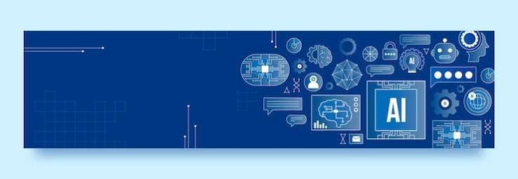

R · SQL · Python · Tableau . Power BI
Hi, I'm Surya! originally from Gaborone, Botswana, now studying at McGill University, where I'm pursuing a Master's in Management Analytics (MMA) after completing my undergrad in Business Analytics with a minor in Finance. I love turning data into decisions, and I'm proficient in Python and SQL, with additional experience in R and Visual Basic. I'm also fluent across the Microsoft Suite. I am fluent in English and currently leveling up my French! Outside of analytics, you'll find me exploring fashion and beauty trends and trying to study the intersection. In fact I am conducting independent research on the intersection of fashion and beauty, and how it can be leveraged to improve business outcomes. Right now, I'm working as a research assistant on two exciting projects: one exploring fintech in Africa, where I co-lead the research, and another looking at AI in recruitment, where I support the research process.
See my current research work.

See my analytics and coding projects.
Fintech in Africa — Leading research on fintech adoption and trends across Africa.
AI in Recruitment — Supporting the research process for a project studying AI in hiring.
More analytics projects will be added here as I complete them in the MMA program.